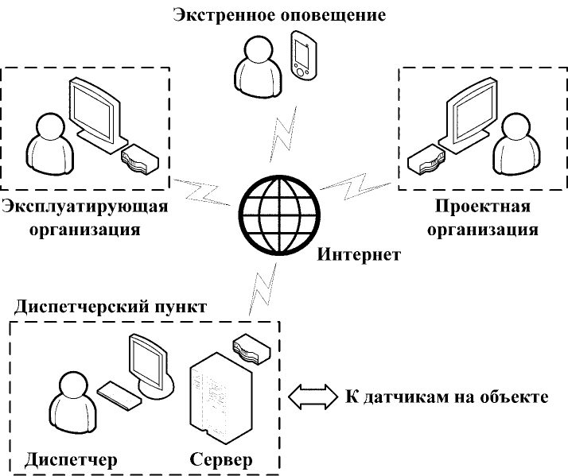
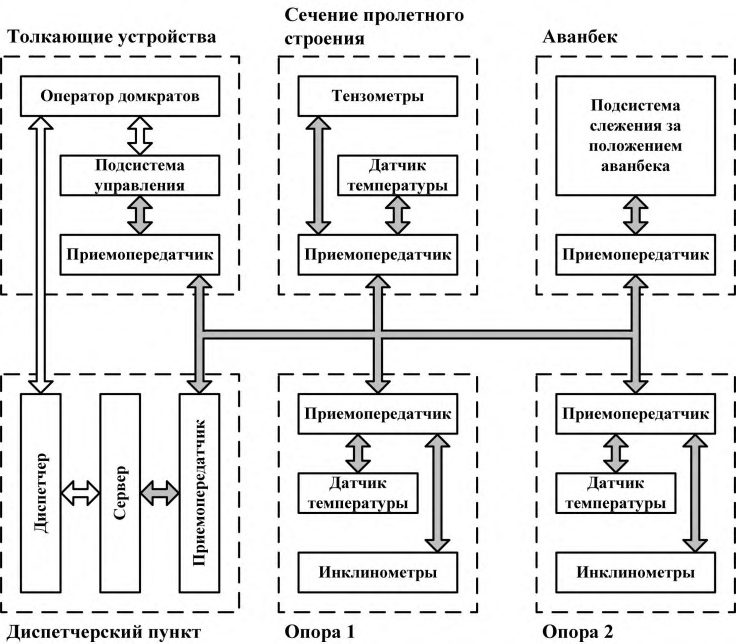
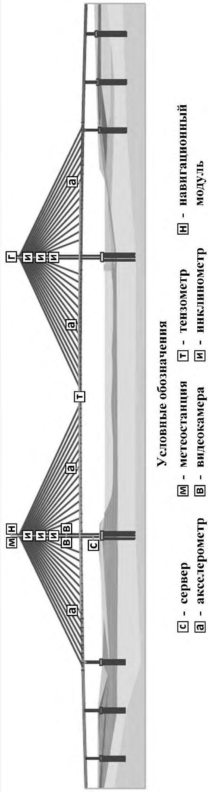

СП 274.1325800.2016 «Мосты. Мониторинг технического состояния»
О документе: разработчики, утверждение, регистрация, ключевые слова
Издание официальное
СП 274.1325800.2016
1 ИСПОЛНИТЕЛЬ - АО «ЦНИИС»
2 ВНЕСЕН Техническим комитетом по стандартизации ТК 465 «Строительство»
3 ПОДГОТОВЛЕН К УТВЕРЖДЕНИЮ Департаментом градостроительной деятельности и архитектуры Министерства строительства и жилищно-коммунального хозяйства Российской Федерации (Минстрой России)
4 УТВЕРЖДЕН Приказом Министерства строительства и жилищно-коммунального хозяйства Российской Федерации от 16 декабря 2016 г. № 967/пр и введен в действие с 17 июня 2017 г.
5 ЗАРЕГИСТРИРОВАН Федеральным агентством по техническому регулированию и метрологии (Росстандарт)
6 ВВЕДЕН ВПЕРВЫЕ
В случае пересмотра (замены) или отмены настоящего свода правил соответствующее уведомление будет опубликовано в установленном порядке. Соответствующая информация, уведомление и тексты размещаются также в информационной системе общего пользования - на официальном сайте разработчика (Минстрой России) в сети Интернет
© Минстрой России, 2016
Настоящий нормативный документ не может быть полностью или частично воспроизведен, тиражирован и распространен в качестве официального издания на территории Российской Федерации без разрешения Минстроя России
СП 274.1325800.2016
Дата введения 2017-06-17
УДК 624.21.04
ОКС 93.040
Ключевые слова: мониторинг, техническое состояние, мост, обследования, датчики, программа мониторинга, испытания, безопасность, эксплуатация
Директор ЗАО «ПРОМТРАНСНИИПРОЕКТ» В.А.Сидяков
Соисполнители:
Руководитель организации-разработчика
АО ЦНИИС
Генеральный директор \_\_\_\_\_\_\_\_\_\_\_\_\_\_\_\_\_\_ А.А. Цернант
личная подпись
Руководитель
разработки Зам. директора по научной работе филиал АО ЦНИИС НИЦ «Мосты» \_\_\_\_\_\_\_\_\_\_\_\_\_\_\_\_\_\_ Ю.В. Новак
личная подпись
СОИСПОЛНИТЕЛИ
Руководитель организации-разработчика ЗАО «ИМИДИС»
Генеральный директор \_\_\_\_\_\_\_\_\_\_\_\_\_\_\_\_\_\_ С.В. Быков
личная подпись
Руководитель разработки \_\_\_\_\_\_\_\_\_\_\_\_\_\_\_\_\_\_ А.И. Васильев
личная подпись
Введение
Настоящий свод правил разработан с целью повышения уровня безопасности людей на сооружениях и сохранности материальных ценностей в соответствии с Федеральным законом от 30 декабря 2009 г. № 384-ФЗ «Технический регламент о безопасности зданий и сооружений», повышения уровня гармонизации нормативных требований с европейскими и международными нормативными документами, применения единых методов определения эксплуатационных характеристик и методов оценки. Учитывались также требования Федерального закона от 22 июля 2008 г. № 123-ФЗ «Технический регламент о требованиях пожарной безопасности» и сводов правил системы противопожарной защиты.
Работа выполнена авторским коллективом: АО «ЦНИИС» (д-р техн. наук А.А. Цернант ; кандидаты техн. наук Н.В. Илюшин , Ю.В. Новак (руководитель работы), Ю.М. Егорушкин , инженеры В.В. Одинцов , Р.И. Рубинчик , Н.Ю. Новак ) при участии: ЗАО «Институт ИМИДИС» (д-р техн. наук А.И. Васильев , инж. А.В. Лысенков ), ЗАО НТО «Мониторинг мостов» (канд. техн наук А.А. Белый ).
1Область применения
Настоящий свод правил устанавливает требования по мониторингу новых и реконструкции существующих постоянных мостовых сооружений и труб под насыпями и распространяется на новые и реконструируемые постоянные мостовые сооружения, мосты, путепроводы, эстакады, скотопрогоны, виадуки (далее - мосты) и трубы: на автомобильных дорогах, в том числе внутрихозяйственных дорогах сельскохозяйственных и промышленных предприятий, на улицах и дорогах населенных пунктов; на железных дорогах колеи 1520 мм при движении пассажирских поездов со скоростями до 200 км/ч, линиях метрополитена и трамвая; на дорогах под совмещенное движение транспортных средств -автомобильных и поездов железных дорог, трамваев и метрополитена; на пешеходных дорогах.
Требования настоящего свода правил не распространяются на: мосты на высокоскоростных магистралях; подходы и регуляционные сооружения; механизмы разводных пролетов мостов; мосты и трубы на внутренних автомобильных дорогах лесозаготовительных и лесохозяйственных организаций, не выходящих на сеть дорог общего пользования и к водным путям; галереи, конструкции для пропуска селей, служебные эстакады; коммуникационные мосты, не предназначенные для пропуска транспортных средств и пешеходов.
\_\_\_\_\_\_\_\_\_\_\_\_\_\_\_\_\_\_\_\_\_\_\_\_\_\_\_\_\_\_\_\_\_\_\_\_\_\_\_\_\_\_\_\_\_\_\_\_\_\_\_\_\_\_\_\_\_\_\_\_\_\_\_\_\_\_
Bridges. Monitoring of technical сondition (Structural health monitoring)
2Нормативные ссылки
В настоящем своде правил использованы ссылки на следующие нормативные документы:
ГОСТ 12.0.004-90 Система стандартов безопасности труда. Организация обучения безопасности труда. Общие положения
ГОСТ 12.4.087-84 Система стандартов безопасности труда. Строительство. Каски строительные. Технические условия
ГОСТ 12.4.107-2012 Система стандартов безопасности труда. Строительство. Канаты страховочные. Технические условия
ГОСТ 19.101-77 Единая система программной документации. Виды программ и программных документов
ГОСТ 24.104-85 Единая система стандартов автоматизированных систем управления. Автоматизированные системы управления. Общие требования
ГОСТ 34.201-89 Информационная технология. Комплекс стандартов на автоматизированные системы. Виды, комплектность и обозначение документов при создании автоматизированных систем
ГОСТ 34.602-89 Информационная технология. Комплекс стандартов на автоматизированные системы. Техническое задание на создание автоматизированной системы
ГОСТ 14254-96 (МЭК 529-89) Степени защиты, обеспечиваемые оболочками (код IP)
ГОСТ Р 22.1.12-2005 Безопасность в чрезвычайных ситуациях. Структурированная система мониторинга и управления инженерными системами зданий и сооружений. Общие требования
ГОСТ Р 52289-2004 Технические средства организации дорожного движения. Правила применения дорожных знаков, разметки, светофоров, дорожных ограждений и направляющих устройств
СП 35.13330.2011 «СНиП 2.05.03-84* Мосты и трубы»
СП 46.13330.2012 «СНиП 3.06.04-91 Мосты и трубы»
СП 79.13330.2012 «СНиП 3.06.07-86 Мосты и трубы. Правила обследований и испытаний»
СП 131.13330.2012
«СНиП 23-01-99* Строительная климатология» (с изменением № 2)
Примечание - При пользовании настоящим сводом правил целесообразно проверить действие ссылочных документов в информационной системе общего пользования - на официальном сайте федерального органа исполнительной власти в сфере стандартизации в сети Интернет или по ежегодному информационному указателю «Национальные стандарты», который опубликован по состоянию на 1 января текущего года, и по выпускам ежемесячного информационного указателя «Национальные стандарты» за текущий год. Если заменен ссылочный документ, на который дана недатированная ссылка, то рекомендуется использовать действующую версию этого документа с учетом всех внесенных в данную версию изменений. Если заменен ссылочный документ, на который дана датированная ссылка, то рекомендуется использовать версию этого документа с указанным выше годом утверждения (принятия). Если после утверждения настоящего свода правил в ссылочный документ, на который дана датированная ссылка, внесено изменение, затрагивающее положение, на которое дана ссылка, то это положение рекомендуется применять без учета данного изменения. Если ссылочный документ отменен без замены, то, положение, в котором дана ссылка на него, рекомендуется применять в части, не затрагивающей эту ссылку. Сведения о действии свода правил целесообразно проверить в Федеральном информационном фонде стандартов.
3Термины и определения
В настоящем своде правил использованы следующие термины с соответствующими определениями:
- 3.1аварийное состояние
- Категория технического состояния строительной конструкции или сооружения в целом, включая состояние грунтов основания, характеризующаяся повреждениями и деформациями, свидетельствующими об исчерпании несущей способности и опасности обрушения и (или) характеризующаяся кренами, которые могут вызвать потерю устойчивости объекта.
- 3.2безопасность строительства и эксплуатации сооружения
- Комплексное свойство объекта противостоять его переходу в аварийное состояние, определяемое: проектным решением и степенью его реального воплощения при строительстве; текущим остаточным ресурсом и техническим состоянием объекта; степенью изменения объекта (старение материала, перестройки, перепланировки, пристройки, реконструкции, капитальный ремонт и т.п.) и окружающей среды как природного, так и техногенного характера; совокупностью антитеррористических мероприятий и степенью их реализации; нормативами по эксплуатации и степенью их реального осуществления.
- 3.3восстановление
- Комплекс мероприятий, обеспечивающих доведение эксплуатационных качеств конструкций, пришедших в ограниченно-работоспособное состояние, до уровня их первоначального состояния, определяемого соответствующими требованиями нормативных документов на момент проектирования объекта.
- 3.4динамические параметры
- Параметры, характеризующие динамические свойства сооружений, проявляющиеся при динамических нагрузках и включающие в себя периоды и декременты собственных колебаний основного тона и обертонов, передаточные функции объектов, их частей и элементов.
- 3.5категория технического состояния
- Степень эксплуатационной СП 274.1325800.2016 пригодности несущей строительной конструкции в целом, а также грунтов основания, установленная в зависимости от доли снижения несущей способности и эксплуатационных характеристик. 3.6 критерий оценки технического состояния: Установленное проектом или нормативным документом количественное или качественное значение параметра, характеризующего деформативность, несущую способность и другие нормируемые характеристики строительной конструкции и грунтов основания. 3.7 комплексное обследование технического состояния сооружения: Комплекс мероприятий по определению и оценке фактических значений контролируемых параметров грунтов основания, строительных конструкций, инженерного обеспечения (оборудования, трубопроводов, электрических сетей и др.), характеризующих работоспособность объекта обследования и определяющих возможность его дальнейшей эксплуатации, реконструкции или необходимость восстановления, усиления, ремонта, и включающий в себя обследование технического состояния сооружения, теплотехнических и акустических свойств конструкций, систем инженерного обеспечения объекта, за исключением технологического оборудования. 3.8 мониторинг технического состояния зданий и сооружений, попадающих в зону влияния строек и природно-техногенных воздействий: Система наблюдения и контроля, проводимая по определенной программе на объектах, попадающих в зону влияния строек и природнотехногенных воздействий, для контроля их технического состояния и своевременного принятия мер по устранению возникающих негативных факторов, ведущих к ухудшению этого состояния. 3.9 мониторинг технического состояния сооружений, находящихся в ограниченно-работоспособном или аварийном состоянии: Система наблюдения и контроля, проводимая по определенной программе для отслеживания степени и скорости изменения технического состояния объекта и принятия, в случае необходимости, экстренных мер по предотвращению его обрушения или опрокидывания, действующая до момента приведения объекта в работоспособное техническое состояние. 3.10 мониторинг технического состояния уникальных зданий и сооружений: Система наблюдения и контроля по определенной программе для обеспечения безопасного функционирования зданий и сооружений за счет своевременного обнаружения на ранней стадии негативного изменения напряженно-деформированного состояния конструкций и грунтов основания или крена, которые могут повлечь за собой переход объектов в ограниченно работоспособное или аварийное состояние.
- 3.11отклонение значений основных эксплуатационных показателей от современного уровня технических требований эксплуатации сооружений. 3.12 нормативное техническое состояние
- Категория технического состояния, при котором количественные и качественные значения параметров всех критериев оценки технического состояния строительных конструкций зданий и сооружений, включая состояние грунтов основания, соответствуют установленным в проектной документации значениям с учетом пределов их изменения. 3.13 обследование технического состояния сооружения: Комплекс мероприятий по определению и оценке фактических значений контролируемых параметров, характеризующих работоспособность объекта обследования и определяющих возможность его дальнейшей эксплуатации, реконструкции или необходимость восстановления, усиления, ремонта, и включающий в себя обследование грунтов основания и строительных конструкций на предмет выявления изменений свойств грунтов, деформационных повреждений, дефектов несущих конструкций и определения их фактической несущей способности. 3.14 общий мониторинг технического состояния сооружений: Система наблюдения и контроля, проводимая по определенной программе, утверждаемой заказчиком, для выявления объектов, на которых произошли значительные изменения напряженно-деформированного состояния несущих конструкций или крена, и для которых необходимо обследование их технического состояния (изменения напряженно-деформированного состояния характеризуются изменением имеющихся и возникновением новых деформаций или определяются инструментальными измерениями). 3.15 ограниченно-работоспособное техническое состояние: Категория технического состояния строительной конструкции или сооружения в целом, включая состояние грунтов основания, при которой имеются крены, дефекты и повреждения, приведшие к снижению несущей способности, но отсутствует опасность внезапного разрушения, потери устойчивости или опрокидывания, и функционирование конструкций и эксплуатация здания и сооружения возможны при мониторинге технического состояния или при проведении необходимых мероприятий по восстановлению или усилению конструкций и (или) грунтов основания и последующем мониторинге технического состояния (при необходимости). 3.16 оценка технического состояния: Установление степени повреждения и категории технического состояния строительных конструкций в целом, включая состояние грунтов основания, на основе сопоставления фактических значений количественно оцениваемых параметров со значениями этих же параметров, установленными проектом СП 274.1325800.2016 или нормативным документом.
- 3.17поверочный расчет
- Расчет существующей конструкции и (или) грунтов основания по действующим нормам проектирования с введением в расчет полученных в результате обследования или по проектной и исполнительной документации: геометрических параметров конструкций, фактической прочности строительных материалов и грунтов основания, действующих нагрузок, уточненной расчетной схемы с учетом имеющихся дефектов и повреждений.
- 3.18работоспособное техническое состояние
- Категория технического состояния, при которой некоторые из числа оцениваемых контролируемых параметров не соответствуют требованиям проекта или норм, но в конкретных условиях эксплуатации не приводят к нарушению работоспособности, и необходимая несущая способность конструкций и грунтов основания с учетом влияния имеющихся дефектов и повреждений обеспечивается.
- 3.19система мониторинга инженерно-технического обеспечения
- Совокупность технических и программных средств, позволяющая осуществлять сбор и обработку информации о различных параметрах работы системы инженерно-технического обеспечения сооружения для контроля возникновения в ней дестабилизирующих факторов и передачи сообщений о возникновении или прогнозе аварийных ситуаций в единую систему оперативно-диспетчерского управления города.
- 3.20система мониторинга технического состояния несущих конструкций
- Совокупность технических и программных средств, позволяющая осуществлять сбор и обработку информации о различных параметрах строительных конструкций (геодезических, динамических, деформационных и других) для оценки технического состояния сооружения.
- 3.21специализированная организация
- Юридическое лицо, уполномоченное действующим законодательством на проведение работ по обследованиям и мониторингу сооружений.
- 3.22текущие динамические параметры сооружений
- Динамические параметры сооружений на момент их обследования или проводимого этапа мониторинга.
- 3.23текущее техническое состояние сооружений
- Техническое состояние сооружений на момент их обследования или проводимого этапа мониторинга.
- 3.24усиление
- Комплекс мероприятий, обеспечивающих повышение несущей способности и эксплуатационных свойств строительной конструкции или сооружения в целом, включая грунты основания, по сравнению с фактическим состоянием или проектными показателями.
- 3.25физический износ сооружения
- Ухудшение технических и связанных с ними эксплуатационных показателей здания, вызванное объективными причинами.
4Общие положения
Цели и задачи мониторинга
Концепция мониторинга
Этим процессом должна управлять автоматизированная система мониторинга технического состояния строительных сооружений с учетом требований ГОСТ Р 22.1.12.
- использование конструкций и конструктивных систем, требующих применения нестандартных методов расчета или разработки специальных методов расчета, или экспериментальной проверки на физических моделях, а также применяемых на территориях, сейсмичность которых превышает 9 баллов;
- заглубление подземной части плиты ростверка ниже планировочной отметки земли более чем на 10 м (пилоны вантовых и висячих мостов);
- мосты, построенные как экспериментальные, в том числе из новых материалов или с применением новых технологий; мостов в условиях плотной городской застройки при расположении конструктивных элементов ближе 20,0 м от существующих зданий и сооружений; многофункциональных мостов с расположением на них офисных, торгово-развлекательных комплексов и т.п. с максимальным расчетным пребыванием более 100 чел внутри объекта (пешеходные мосты) или более 10000 чел вблизи объекта (в черте города); иных мостовых сооружений, отнесенных к особо опасным, технически сложным или уникальным объектам.
Мониторинг технического состояния мостов разрешается проводить только специализированным организациям, оснащенным современной аппаратурой и имеющим в своем составе высококвалифицированных и опытных сотрудников, допуски и/или лицензии в соответствии с законодательством РФ, [1].
5Виды мониторинга
- по назначению;
- форме предоставления информации в течение времени (по длительности);
- стадии жизненного цикла сооружения.
При контрольном мониторинге решается задача по предупреждению возникновения аварийных состояний конструктивных элементов и сооружения в целом, которые могут быть вызваны чрезвычайными обстоятельствами: природными явлениями -паводками, ураганами, землетрясениями и т.п.; деятельностью людей, а также вследствие опасного развития дефектов, имеющихся в эксплуатируемой конструкции.
К задачам, решаемым в ходе исследовательского мониторинга, относятся:
- исследование работы конструкций с применением новых конструктивно-технологических решений или материалов;
- исследование эксплуатационных воздействий на сооружение;
- выявление причин появления дефектов и прогнозирование их развития;
- исследование работы моста в условиях эксплуатации, выбор вида математических моделей, применяемых при надзоре за состоянием сооружений, проектировании и т.п.
- на период строительства;
- на период эксплуатации.
Возможно, что мониторинг, устанавливаемый на стадии строительства, продолжается и на стадии эксплуатации.
СП 274.1325800.2016
6Состав работ по мониторингу. Этапы мониторинга
Рекомендуется следующее содержание Программы мониторинга:
- цель мониторинга;
- система периодичности измерений и сроки выполнения работ;
- основные характеристики объекта мониторинга;
- задачи мониторинга, анализ материалов наблюдений и обследований;
- перечень видов работ, деталей, элементов конструкции, где необходимо проводить измерения;
- применяемые средства мониторинга, порядок их размещения на конструкции сооружения;
- применяемые средства измерений, приборы, оборудование, порядок и место их установки, порядок измерений;
- порядок проведения инструментальных измерений;
- методика обработки данных измерений и анализа результатов;
- мероприятия по обеспечению доступа к элементам конструкции для установки датчиков, марок, снятия отсчетов;
- мероприятия по обеспечению сохранности установленных датчиков, марок и приборов от их повреждения, вандализма, хищения;
- перечень отчетных документов, сроки их представления.
- первый этап включает в себя проведение детального обследования технического состояния мостов, проводимого в соответствии с СП 79.13330;
- второй этап - разработка детальной Программы мониторинга, которая разрабатывается исполнителем и утверждается заказчиком;
- третий этап - монтаж необходимого оборудования;
- четвертый этап -калибровка установленного оборудования и пусконаладочные работы;
- пятый этап - проведение мониторинга;
- шестой этап - анализ результатов, передача их заказчику;
- седьмой этап (при необходимости) - демонтаж оборудования.
7Архитектура систем мониторинга и технические требования к аппаратурному и программному обеспечению
При выборе архитектуры системы мониторинга должны учитываться: вид мониторинга, число и состав контролируемых параметров, взаимное расположение и удаленность мест измерений, скорости протекания отслеживаемых процессов и их изменение во времени, продолжительность измерений, ошибки измерений (в том числе за счет изменения состояния окружающей среды, а также влияния помех и аномалий природного и техногенного характера), требования к получаемым данным, регламент действий диспетчерских служб, а также дополнительные требования технического задания.
Выбор и детальная проработка архитектуры системы мониторинга должны осуществляться на этапе разработки Программы мониторинга.
- структурную схему системы в целом и, в случае многоуровневой системы, ее отдельных уровней;
- перечень измерительного оборудования (определяется составом измеряемых величин);
- перечень телекоммуникационного оборудования;
- перечень аппаратно-программных средств, с помощью которых осуществляется обработка, отображение и хранение информации;
- информацию о возможностях, связанных с изменением системы (добавлением новых датчиков, приемо-передающих устройств, модернизацией программного обеспечения и т.д.).
Надежность системы мониторинга
- дублированием датчиков (первичных измерителей);
- дублированием каналов связи;
- контролем различных (в том числе взаимосвязанных) параметров сооружения;
- применением специальных конструктивных решений (защитные кожухи, способы крепления и т.п.);
- наличием возможности автоматической остановки рабочих процессов, экстренного оповещения диспетчера о нештатной ситуации, сигнализации и т.п.;
- минимизацией числа элементов системы, наиболее подверженных повреждению вследствие нахождения в зоне производства работ;
- минимизацией применения способов измерения и получения информации, для выполнения которых требуется вмешательство человека (измерение с помощью ручных деформометров, визуальная фиксация измеренных значений с последующим занесением оператором значений в базу данных и т.п.);
- применением дополнительных требований к программному обеспечению (резервное копирование баз данных, автоматическое восстановление системы после сбоя и т.п.);
- применением реализованной с помощью аппаратно-программных средств диагностики работы оборудования и выдачи предупреждающих сигналов диспетчеру в случаях обнаружения неполадок в системе.
Мероприятия, направленные на повышение надежности, должны быть сформулированы в Программе мониторинга.
Конструктивные требования к датчикам, периодичность измерений
В состав системы мониторинга должны входить запасные части, инструменты и принадлежности (комплекты ЗИП) в объеме, установленном в техническом задании на мониторинг.
СП 274.1325800.2016
Места расположения оборудования и линий связи необходимо выбирать с учетом возможности доступа к ним персонала, обслуживающего системы мониторинга (за исключением случаев, когда датчики заложены непосредственно в «тело» элемента конструкции и т.п.). с
Разрешается применение креплений датчиков, предусматривающих их съем и повторную установку после поверки, калибровки, технического обслуживания или замены. Порядок поверки, калибровки, технического обслуживания и замены должен быть установлен в регламенте на обслуживание системы мониторинга.
Способы креплений и измерений, предусматривающие нарушение целостности материала конструкций, должны быть согласованы с проектной организацией.
8Постоянный мониторинг
Требования к системам непрерывного мониторинга мостов (СНММ), должны соответствовать ГОСТ 24.104.
В программном обеспечении СНММ реализуются меры по защите от ошибок при вводе и обработке информации, обеспечивающие заданное качество выполнения функций СНММ.
- сбор исходных данных об объекте мониторинга, условиях его эксплуатации, в том числе по проектно-исполнительной документации и непосредственно на мосту;
- проведение научно-исследовательских работ;
- разработка концепции мониторинга: формулирование задач мониторинга; определение номенклатуры измеряемых и контролируемых параметров; разработка функциональной структуры СНММ; разработка схем кабельных соединений СНММ; формулирование требований к устройствам сбора и обработки данных, условиям передачи информации и предоставления ее обслуживающему персоналу, коммуникационной схеме, программному обеспечению мониторинга и другим элементам.
- разработка и утверждение технического задания на создание СНММ (ТЗ на СНММ) в соответствии с ГОСТ 34.602;
- определение полной номенклатуры оборудования;
- разработка рабочих чертежей размещения средств мониторинга: первичных преобразователей, усилителей, контроллеров, кабельной системы, оборудования диспетчерской и другого оборудования, с привязкой к конструкциям и помещениям моста;
- расчетное (с использованием конечно-элементной модели) обоснование допусков изменений (ошибок) контролируемых параметров и назначение границ опасных изменений контролируемых параметров;
- сметные расчеты стоимости реализации системы мониторинга;
- разработка документации на СНММ в объеме, необходимом для описания полной совокупности принятых проектных решений и достаточном для дальнейшего выполнения работ по созданию СНММ. Виды документов по ГОСТ 34.201;
- разработка решений по алгоритмам решений задач и применяемым языкам, по организации и ведению информационной базы, системе классификации и кодирования информации. Разработка программ и программных средств системы, выбор, адаптация и (или) привязка приобретаемых программных средств, разработка программной документации в соответствии с ГОСТ 19.101.
- оценивается отклик конструкции на действие временных подвижных нагрузок: температуры, ветра и пр. с определением диапазонов изменения напряженно-деформированного состояния несущих конструкций моста;
- определяются динамические характеристики моста - основные формы и частоты свободных колебаний.
При необходимости выполняются другие исследования.
- подготовка объекта мониторинга к монтажу СНММ;
- поставка оборудования;
- монтаж средств мониторинга;
- пусконаладочные работы;
- подготовка персонала, обслуживающего СНММ;
- проведение предварительных испытаний;
- проведение опытной эксплуатации в течение 3 - 6 мес;
- проведение приемочных испытаний;
- передача СНММ в постоянную эксплуатацию.
В ходе своей работы СНММ информирует персонал о текущем состоянии моста.
При оценке исправного состояния моста проверяется нахождение контролируемого параметра в пределах допусков, которые задаются в проекте СНММ и могут быть уточнены в процессе ее опытной эксплуатации.
В качестве контролируемых параметров должны использоваться значения, получаемые прямыми измерениями или косвенно, на основании результатов прямых измерений других параметров, функционально связанных с искомым.
Информацию о событиях, выделенных для хранения, следует помещать в базу данных. Работа с базой данных обеспечивает возможность более глубокой аналитической обработки и проведения обобщающих исследований процессов эксплуатации моста, формирования отчетов о его работе.
9Периодический мониторинг
Периодический мониторинг состоит из двух стадий. На первой стадии разрабатывается Программа периодического мониторинга. На второй стадии проводится мониторинг с предварительной установкой оборудования в соответствии с Программой.
- осмотр элементов, деталей конструкций с выявлением и выделением на ней повреждений и дефектов - мест коррозии материала, арматуры в бетоне, трещин, мест возможной концентрации напряжений, протечек воды и т.п. Предусматривают инструментальные измерения отмеченных дефектов: длины и ширины раскрытия трещин, площади и толщины продуктов коррозии, площади протечек и т.п.;
- определение физико-механических характеристик материалов, их химического состава, содержания хлоридов в бетоне, толщины защитного слоя и глубины карбонизации бетона;
- контроль геометрических характеристик конструктивных элементов сооружения: очертания и формы взаимного положения сопрягаемых элементов, например, пролетных строений и опор, профиля, уклонов и углов перелома проезжей части;
- определение деформаций материала (бетона, стали, клеев, швов), вызванных длительными процессами (релаксацией, усадкой и ползучестью бетона). Также от воздействия временной нагрузки (проходящего транспорта, от фиксированной -специально установленной нагрузки), характеризующей жесткостные показатели конструкции;
- выявление деформаций, перемещений материала в местах дефектов (трещин, концентрации напряжений и др.), влияющих на характер работы элементов конструкций, от постоянной нагрузки во времени и от воздействия временной нагрузки;
- исследование (определение) деформаций - напряжений в материале
(бетоне, металле) конструкции от постоянной нагрузки, то есть соответствующих состоянию конструкции на период проведения работ;
- определение значений динамических характеристик конструкций (частоты, амплитуды, ускорения колебаний), вызванных воздействием проходящего транспорта по сооружению или специальной прилагаемой фиксированной нагрузки;
- определение значений линейных и угловых перемещений в характерных сечениях (местах) конструкции, вызванных изменением напряженно-деформированного состояния во времени, а также от временной нагрузки проходящего транспорта и (или) от фиксированной специально установленной нагрузки;
- фиксирование значений влажности и температуры конструктивных элементов и сооружения на период выполняемых инструментальных работ;
- обработка данных инструментальных измерений, анализ работы конструкций по результатам измерений, оценка транспортноэксплуатационного состояния сооружения и прогноз его изменения, разработка рекомендаций по эксплуатации сооружения;
- выполнение работ по определению геометрического очертания конструкций моста и (или) взаимного положения сопрягаемых элементов конструкции в характерных местах (в соответствии с Программой мониторинга) -устанавливают марки, датчики, соответствующие применяемым измерительным средствам (геодезическим инструментам, специальным приборам снятия отсчетов датчиков, деформометров и т.п.);
- определение длительных деформаций материала - устанавливают марки для периодического присоединения деформометров при измерениях или датчики, предназначенные для длительной работы в натурных условиях;
- определение жесткостных показателей конструкций и (или) динамических характеристик - устанавливают крепежные элементы для соответствующих измерительных устройств (тензометров, прогибомеров, угломеров, вибрографов и т.п.);
- определение напряжений -деформаций бетона (металла) от постоянной нагрузки - устанавливают датчики, работающие длительное время совместно с конструкцией или только в период измерения напряжений методом «разгрузки», путем выделения фрагмента с датчиком из конструкции (или методом частичной разгрузки, когда датчики остаются на конструкции);
- контроль профиля проезжей части нивелированием в створах вдоль моста по краям ездового полотна и по оси проезжей части. Марки для нивелирования устанавливают в характерных местах для выявления продольных и поперечных уклонов, углов перегиба профиля вдоль проезжей частью.
10Специальные виды мониторинга
Мониторинг зданий и сооружений окружающей застройки
Геомеханическое состояние до начала строительных работ оценивают на основании геологических данных и инженерных изысканий. При этом особое внимание уделяют определению природного поля напряжений, характеристике тектонических нарушений, трещиноватости, слоистости, водообильности, карстообразованию и другим особенностям массива.
Геотехнический мониторинг сооружений осуществляется в соответствии с Программой, которая разрабатывается организацией, проводящей мониторинг, и согласовывается с заказчиком.
У организации, проводящей мониторинг, должны быть разрешительные допуски СРО и/или лицензия на проведение инженерных изысканий для строительства сооружений I уровня ответственности.
Программа мониторинга должна разрабатываться на стадии проектирования объекта и учитывать уровень ответственности сооружения, технологические особенности его возведения и гидрогеологические условия строительной площадки.
В Программе должны быть отражены объемы и состав работ по мониторингу с указанием перечня измеряемых параметров и обоснованием требуемой точности измерений.
В случае применения автоматизированных систем контроля к разработке Программы мониторинга должны привлекаться представители организации - разработчика автоматизированной системы.
- отчет об инженерно-геологических изысканиях;
- отчеты (и иные материалы) по результатам обследования технического состояния существующих сооружений, расположенных в зоне влияния предполагаемого строительства, выполненные по заданию заказчика до начала строительно-монтажных работ (СМР);
- прогноз влияния проведения земляных и строительно-монтажных работ (включая обоснованность способа погружения свай или шпунтовых ограждений ударными и вибрационными методами) на прочность и устойчивость зданий окружающей застройки и сохранность их конструкций;
- инженерно-технические и технологические решения, реализация которых обеспечивает прочность и устойчивость зданий и сооружений, расположенных в зоне влияния строительства, устойчивость берм котлованов, сохранность сооружений транспортной инфраструктуры;
- проект организации строительства (ПОС), включая (при необходимости) технологические схемы строительства объекта в стесненных условиях существующей застройки;
- ППР с разработанной технологией выполнения работ по устройству глубоких котлованов, при реализации которых должно практически исключаться разуплотнение грунтов оснований и изменение их физикомеханических свойств, а также разуплотнение обжатых грунтов оснований существующих зданий (сооружений) окружающей застройки и объектов инженерной инфраструктуры (сетей, подземных и транспортных сооружений), попадающих в зону влияния строительства;
- перечень возводимых одновременно с основным объектом подземных и надземных сооружений, строительные работы на которых могут оказать влияние на результаты выполняемого мониторинга;
- перечень предполагаемых к разработке (или уже выполняемых) видов мониторинга (мониторинг зданий и сооружений окружающей застройки, мониторинг геологической среды района строительства и др.) на возводимом объекте и в зоне влияния строительства.
- надежности оснований возводимого (реконструируемого) сооружения;
- стабильности свойств грунтов и уровня подземных вод в основании сооружений, расположенных в зоне влияния нового строительства;
- надежности конструкций крепления стенок котлована;
- эксплуатационной пригодности существующих подземных сооружений и коммуникаций, дорог и других объектов инженерной инфраструктуры, расположенных в зоне влияния нового строительства;
- эксплуатационной пригодности подземных сооружений и коммуникаций, находящихся под фундаментами возводимого сооружения;
- радиационной и других видов экологической безопасности.
- фактическое состояние (параметры) грунтов при разработке котлована, а также в стенках отрываемого котлована, процессе устройства их крепления;
- выполнение мероприятий по сбору и отводу грунтовых, поверхностных вод, атмосферных осадков -для предотвращения замачивания грунтов основания;
- уровень откачиваемых грунтовых вод при водопонижении и водоотливе в зоне влияния строительства;
- состояние грунта в стенках котлована в осенне-зимний и весенний периоды;
- фактический уровень грунтовых вод разных водоносных горизонтов, вскрытых скважинами при установке конструкций ограждения котлована;
- состояние бермы котлована: организация отвода поверхностных вод; значения масс складируемых материалов и оборудования в пределах призмы обрушения; просадки грунта; провалы; развитие трещин;
- выполнение мероприятий, обеспечивающих стабильность параметров грунтов основания, учтенных в проекте при определении несущей способности фундаментной плиты или конструкции свайно-плитного фундамента;
- деформации установленных конструкций ограждения котлована по мере разработки грунта, в том числе и при динамических воздействиях;
- состояние устройств, позволяющих создать контролируемое предварительное обжатие (напряжение) грунтового массива бортов котлованов (распорные системы с гидравлическими или винтовыми домкратами, грунтовые анкера с предварительным натяжением, оснащенные устройствами, контролирующими усилия в распорных элементах и анкерных тягах);
- развитие неблагоприятных геологических процессов (карст, суффозия, оползни, подъем грунтовых вод);
- изменение геоэкологической обстановки: радиационного фона; загрязнения грунтов и подземных вод; газовыделения.
- графиков развития осадок;
- графиков деформаций дна котлована и прилегающей территории;
- деформаций ограждений котлована;
- послойных деформаций основания возводимого сооружения;
- картограмм изменения напряжений под подошвой фундаментов;
- результатов гидрогеологических режимных наблюдений;
- результатов контроля за радиационной обстановкой;
- других материалов, перечень которых определен Программой.
Вибродинамический мониторинг
Вибромониторинг предназначен для периодической или непрерывной инструментальной диагностики эксплуатируемых автодорожных мостов и применяется для приемочных испытаний вновь построенных и реконструируемых мостов. Вибромониторинг должен базироваться на основе анализа параметров расчётного и экспериментального откликов сооружения на динамическое воздействие в низкочастотном диапазоне собственных форм колебаний. 10.15 Методы вибромониторинга разделены на пассивные и активные. Методами пассивной вибродиагностики пользуются тогда, когда отсутствует специальная система нагружения исследуемой конструкции, а в качестве режима нагружения используется случайное или регулярное фоновое воздействие природного или техногенного характера. Практическое применение метода пассивной вибродиагностики должно осуществляться при случайном воздействии: транспортного потока, прогона одиночного автомобиля, ветра, микросейсмов и т.д. (не стационарный, неэргодический процесс). Методы активной вибродиагностики характеризуются искусственным приложением к конструкции сооружения импульсной или гармонической, вибрационной нагрузки (стационарный, эргодический процесс). Практическое применение импульсного нагружения в активной вибродиагностике должно осуществляться: специальными вибромашинами разного типа воздействия (электрическими, гидравлическими и сервогидравлическими), прогоном одиночного автомобиля через искусственные неровности, оттяжкой конструкции тросом через размыкающее звено, сбросом груза или ударом через пластичную прокладку и т.д. При активном воздействии на конструкцию импульсной нагрузкой, изза малой продолжительности воздействия, получение стационарных колебаний затруднительно, что приводит к необходимости многократного повторения нагружения. 10.16 Характеристики отклика сооружения: частоты низших форм колебаний пролетных строений, спектры мощности или относительных амплитуд, значение динамического коэффициента. Сопоставление результатов с данными расчетной модели сооружения должно проводиться по частотам как минимум пяти низших форм колебаний (частотный анализ). оперативности состояния
- по результатам предшествующих испытаний одного и того же объекта (экспресс-диагностика);
- статистическим параметрам отклика аналогичных сооружений;
- параметрам отклика калиброванной (адаптированной по экспериментальным данным) математической модели сооружения, что даёт наиболее точный результат.
- измеряются и регистрируются входной сигнал и сигнал-отклик;
- проводится Фурье-анализ сигналов;
- в частотной области, в комплексном виде, определяется отношение сигналов отклика конструкции к входному силовому воздействию.
На этом же этапе проводится обследование, для выявления причин появления аномалий в отклике сооружения на динамическое воздействие.
11Аппаратурное обеспечение мониторинга Состав приборов и оборудования
11.1Системы и оснащение мониторинга напряженнодеформационного состояния несущих конструкций
При оснащении систем мониторинга применяются следующие приборы и технические средства:
- Стационарные и переносные инклинометры (наклономеры). По условиям установки: поверхностные и встраиваемые. Поверхностные инклинометры устанавливаются на вертикальных и горизонтальных конструкциях сооружения для фиксации перемещений;
- экстенсометры (датчики осадки) - предназначены для долговременного мониторинга, контроля за поведением сооружения;
- датчики нагрузки -применяются для мониторинга нагрузок в основании сооружений (датчики нагрузки грунта) или в строительных конструкциях (датчики нагрузки бетона);
- тензометрические датчики (различного вида) - применяются для измерения напряжений в стальных и железобетонных конструкциях, устанавливаются (чаще всего) на арматуру перед заливкой бетона при изготовлении железобетонных конструкций;
- гидравлические (анкерные) датчики нагрузки - применяются для мониторинга нагрузок на основные опорные элементы сооружения;
- измерители трещин и стыков -применяются для мониторинга раскрытия трещин, стыков в сооружениях;
- регистраторы и накопители - портативные переносные устройства с жидкокристаллическим дисплеем и универсальные портативные регистраторы-накопители, в составе которых микрокомпьютер, счетчик сигналов, таймер, сканер и др.
11.2Стационарная станция мониторинга технического состояния несущих конструкций
Задание на проектирование должно предусматривать оборудование стационарной станции мониторинга деформационного состояния несущих конструкций для выявления мест накопления повреждений за счет анализа передаточных функций для различных частей моста и измерения наклонов пролетного строения и опор.
Необходимо обеспечивать оборудование мест установки измерительных пунктов станции для размещения приборов в соответствии с техническими условиями по мониторингу сооружения.
Измерительные пункты станции мониторинга следует устанавливать на грунте на расстоянии 50 - 100 м от сооружения.
Измерительные пункты станции мониторинга следует устанавливать на грунте под подошвой фундамента (для фиксации контактных напряжений), в арматурном каркасе фундамента, внутри и/или на поверхности вертикальных несущих конструкций (для фиксации деформаций).
Отдельно оборудуются измерительные пункты станции для установки приборов, измеряющих крены (углы наклона) опор и пролетных строений.
Места установки измерительных пунктов станции должны располагаться в монолитных железобетонных или кирпичных нишах с закрывающимися на замок дверцами или в металлических закрывающихся на замок контейнерах, жестко соединенных с несущими конструкциями сооружения. Доступ к измерительным пунктам должен быть обеспечен только персоналу станции.
Для объективного анализа результатов мониторинга и сравнения контролируемых параметров с результатами расчета необходима разработка математической модели сооружения.
11.3Станция сейсмометрического мониторинга
Для мониторинга мостов рекомендуется аппаратура с применением сейсмометрических технологий. Такой комплекс позволяет вести мониторинг с применением измерений амплитуд собственных частот колебаний.
Требования к приборам
- плавное и непрерывное изменения частоты нагружающего воздействия в диапазоне 0,6 - 30 Гц;
- управление нагружающим воздействием от ЭВМ (как частотой, так и амплитудой);
- стабильность выходных характеристик по частоте и по амплитуде;
- высокую мобильность установки и оперативность при подготовке к работе;
- работу системы без жесткого анкерного крепления на объекте испытаний.
11.6Средства измерения динамических прогибов конструкций
В качестве средств измерения могут использовать первичные преобразователи любого типа. Наиболее удовлетворительные результаты обеспечивает система со следующими характеристиками:
- частотный диапазон - 0,5 - 50 Гц;
- класс точности измерений, не ниже 2,5;
- динамический диапазон, не ниже 100 дБ;
- измеряемые перемещения - от 1 мкм;
- простота и надежность крепления на исследуемой конструкции;
- инерциальный принцип измерения перемещений (отсутствие необходимости применять какую-либо опорную базу (поверхность земли, другой элемент конструкции сооружения) и механическую связь с ней проволока, поводок и т.д.);
- помехоустойчивость к блуждающим токам;
- устойчивость к климатическим воздействиям.
12Компьютерное моделирование как составная часть мониторинга
Для этого применяется любой программный комплекс, основанный на методе МКЭ-моделирования и способный исследовать статические и динамические реакции расчетной модели на различные сочетания внешних воздействий.
Наиболее существенное требование -наличие в применяемом программном комплексе блока исследования динамических реакций МКЭмодели, что позволяет исследовать реакции модели на гармоническое воздействие в частотной области, конечная цель этого исследования получение АФЧХ динамических прогибов для достаточно большого числа точек исследуемой модели сооружения.
- работать под управлением WindowsХР и выше, применять стандартные ресурсы операционной системы, а также ПС других разработчиков, инсталлированные на ЭВМ;
- работать с внешних носителей, без копии на жестком диске ЭВМ;
- обеспечивать возможность хранения информации в режиме оперативного доступа на жестком диске, внешних носителях ЭВМ и по сети;
- обеспечивать визуализацию всех видов информации, в том числе, в графическом и анимационном виде;
- обеспечивать возможность перевода всей информации с электронных носителей на бумажные носители.
13Сбор, анализ и хранение данных, получаемых в процессе мониторинга
- В системе мониторинга должна быть реализована возможность изменения периодичности снятия показаний.
- осуществление сбора, первичной обработки, систематизации и накопления данных;
- реализация комплексной обработки, анализа и визуализации результатов проводимых измерений или предоставление оператору системы информации, необходимой для анализа результатов измерений;
- координация работы различных подсистем и элементов системы мониторинга, их настройка, функциональный контроль и выдача диспетчеру предупреждающей информации о неполадках;
- реализация требований к способам оповещения о возникновении нештатных и аварийных ситуаций;
- реализация взаимодействия с другими автоматизированными системами.
На основе программного обеспечения допускается реализация ввода информации в общую базу данных в ручном режиме (в том числе в виде замечаний, комментариев и т.п.). При этом должны быть приняты меры для однозначной идентификации источника полученной информации в процессе дальнейшей обработки.
Такое разделение в некоторой степени носит условный характер и во многом зависит от применяемых методик измерений и сбора данных. Предварительная обработка может включать в себя преобразования формы данных, фильтрацию, проверку данных и т.д. Комплексная обработка может включать в себя спектральный анализ, сравнительный анализ, статистическую обработку и т.д.
Результатом выполнения процесса предварительной обработки данных должна быть информация по каждому измеряемому параметру или их совокупности в готовом для записи в базу данных виде.
Результатом выполнения процесса комплексной обработки данных должна быть информация о техническом состоянии объекта мониторинга.
(экспертная оценка) или с помощью программного обеспечения (на основе заданного алгоритма обработки данных).
Результат комплексной обработки данных, реализованный с помощью программного обеспечения, в зависимости от скорости изменения значений измеряемых параметров и целей мониторинга должен быть представлен в виде:
- систематизированной и удобной для восприятия диспетчером информации по отдельным измеряемым параметрам или их совокупности (таблицы, графики, диаграммы и т.д.);
- отчета установленного образца, сформированного по запросу диспетчера;
- информации, характеризующей техническое состояние объекта мониторинга, поступающей диспетчеру системы мониторинга или соответствующим службам (строительным, эксплуатационным, диспетчерским и т.п.);
- сигналов управления (сформированных и переданных в автоматическом режиме) для оборудования или взаимосвязанных автоматизированных систем для быстрого реагирования на нештатные или аварийные ситуации.
Порядок действий при монтаже, эксплуатации и обслуживании системы мониторинга регламентируется соответствующим разделом (или разделами) Программы мониторинга.
Все несоответствия (недостатки, изменения и т.д.), которые были обнаружены в Программе мониторинга на этапе монтажа, должны быть документально зафиксированы в соответствующих актах для последующего согласования и внесения изменений в программу мониторинга.
Организацией, осуществляющей монтажные работы в соответствии с Программой мониторинга, должна быть оформлена соответствующая исполнительная документация.
14Регламент действий диспетчерских служб
(например, применение нескольких приемопередатчиков на разных частотах), так и на основе сочетания разных видов связи (например, кабельное соединение измерительных модулей с диспетчерским пунктом дублируется посылкой данных с помощью модемов на сервер через Интернет - рисунок 1).
Рисунок 1 - Схема передачи информации

15Техника безопасности при мониторинге
- проработку технических и организационных решений по безопасности полевых изыскательских работ на этапе камеральной предпроектной подготовки, т.е. выбор средств и способов осмотра сооружения. Комплектацию страховочного снаряжения (одежда, веревки, карабины, лестницы в соответствии с ГОСТ 12.4.087 и ГОСТ 12.4.107, подготовку договора-аренды (по необходимости) смотровой машины, медицинское освидетельствование участников высотных работ перед их началом;
- мероприятия по ограничению или полному закрытию движения или при ведении работ без ограничения движения предусматривают меры, исключающие наезд, возможность обрушения конструкций, поражения людей током, паром и т.п. от размещаемых на мосту инженерных коммуникаций в соответствии с ГОСТ Р 52289.
Для обеспечения непосредственного доступа к конструкциям должны быть использованы имеющиеся на сооружении обустройства: смотровые ходы, переходные площадки, лестницы и т.п.
Для обеспечения доступа к конструктивным элементам при необходимости устраивают подмости, леса и площадки, настилы, люльки, приставные лестницы, стремянки, а также используют смотровые машины и вышки.
Перед началом работ все обустройства, обеспечивающие доступ к деталям и элементам конструкции, принимаются к использованию руководителем работ по мониторингу:
- при выполнении работ по мониторингу работники соблюдают требования ГОСТ 12.0.004, [7], [8] и положения, приведенные в [4], [9].
- персонал, проводящий работы в полевых условиях (на сооружении), проходит вводный (общий) инструктаж в отделе охраны труда предприятия, а также инструктаж непосредственно на объекте, проводимый уполномоченным лицом. Проведение инструктажа фиксируется в специальном журнале с подписями проводившего инструктаж и прошедшего инструктаж;
- персонал, проводящий обследование, применяет необходимые защитные приспособления и спецодежду: защитные каски; предохранительные пояса с указанием места закрепления карабина и страховочных канатов (при необходимости); средства общего и индивидуального освещения места работ; спецодежду, аппараты и приспособления для защиты глаз и дыхательных путей (маски, очки, респираторы, противогазы, т.п.), применяющиеся на конкретном объекте;
- все работы по осмотру, обмерам и испытаниям конструкций на высоте более 3 м, как правило, проводят с подмостей. Выполнение этих работ без подмостей допускается только при невозможности их устройства, с применением предохранительных приспособлений (натянутых стальных канатов, страховочных сеток и т.д.) и монтажных поясов.
Ежедневно, перед началом работ, проводят проверку состояния лесов, подмостей, ограждений, люлек, лестниц; в случае их неисправности принимают необходимые меры по ремонту;
- бригады, проводящие осмотры внутри балок пролетных строений, имеют в своем составе не менее трех человек с индивидуальными средствами связи (рации) и возможностью вызова (телефон, рации дальнего действия) средств аварийной и скорой помощи;
- работы внутри балок пролетных строений (на высоте) выполняют в светлое время суток;
- при работах на проезжей части и на подходах соблюдают требования ГОСТ Р 52289, [10], применяют защитные жилеты, предупредительные знаки.
- при необходимости размещения вспомогательных машин и механизмов на проезжей части пролетных строений извещают органы управления автомобильными дорогами, а также местные органы ГИБДД;
- участники проведения высотных работ имеют медицинские справки о допуске к ним, полис медицинского страхования и страховки от несчастного случая. Лица моложе 18 лет к работам не допускаются. Все работы следует проводить с учетом [11];
- все работы, связанные с электрооборудованием следует проводить с учетом требований [12].
АПриложение А. (справочное)
Пример системы мониторинга
А.1 В качестве примера на рисунке А.1 приведена структурная схема автоматизированной системы мониторинга напряженно-деформированного состояния пролетного строения и опор моста во время строительства методом продольной надвижки.
Рисунок А.1

Контроль состояния конструкций в процессе производства работ осуществляется на основе показаний датчиков, установленных на двух опорах, в сечении пролетного строения и на аванбеке. В случае необходимости число контролируемых опор и сечений может меняться.
А.2В состав измерительного комплекта входят:
- тензометры для определения механических напряжений в наиболее нагруженном сечении (сечениях) пролетного строения;
- инклинометры для определения отклонения опор от вертикальной оси в процессе работы толкающих домкратов;
- датчики для последующего учета температурных изменений;
- спутниковые навигационные модули для фиксации отклонения положения аванбека от теоретической траектории в плане и по высоте.
А.3 В непосредственной близости от места производства работ на строительной площадке устанавливается диспетчерский пункт, в котором располагается диспетчер и оборудование, необходимое для управления системой мониторинга. На сервере устанавливается специальное программное обеспечение, осуществляющее сбор данных, их обработку и запись в базу данных.
А.4 С помощью программного обеспечения проводится централизованный опрос всех датчиков с периодом, заданным в Программе мониторинга. Обмен запросами между элементами системы происходит по радиоканалу с помощью приемопередающей аппаратуры. Данные, полученные от датчиков, в автоматическом режиме сравниваются с расчетными и предельными допустимыми значениями. В случае превышения заранее установленных пороговых значений диспетчеру подается соответствующий сигнал. Далее диспетчер передает сигнал остановки надвижки пролетного строения моста оператору, который осуществляет выключение домкратов. Для максимально быстрой реакции на превышение предельных значений может быть настроено автоматическое отключение толкающих домкратов. В этом случае сигнал остановки формирует программа после обработки полученных от датчиков данных.
С помощью системы мониторинга осуществляется оперативное управление процессом производства работ. При этом данные, полученные в ходе отдельных этапов надвижки, сохраняются в базе данных для возможности последующей обработки и формирования необходимой отчетной документации.
А.5 Примерный состав оборудования, которое может применяться для мониторинга состояния эксплуатируемого вантового моста, показан на рисунке А.2.

на эксплуатируемом вантовом мосту
Состояние пилонов оценивается с помощью инклинометров и спутниковых навигационных модулей. Инклинометры, установленные в нескольких точках, передают информацию о конфигурации пилонов по высоте. Положения верхних точек пилонов определяют с помощью навигационных модулей.
Изменение натяжения вант определяется на основе анализа частот их собственных колебаний, которые измеряются с помощью акселерометров.
С помощью тензометров контролируется напряженнодеформированное состояние пролетного строения.
Метеостанция передает информацию о погоде для возможности последующего анализа данных, полученных в разных условиях.
Для определения положения временной нагрузки на мосту применяются видеокамеры.
Все установленные приборы объединяются в единую сеть с помощью общей шины, которая прокладывается в диспетчерский пункт и подключается к серверу. При этом, между сервером и датчиками могут устанавливаться дополнительные блоки (на рисунке не показаны), осуществляющие управление обособленными группами датчиков, предварительную обработку данных и т.п.
Сбор, обработка и накопление данных проводятся с помощью программного обеспечения, установленного на сервере.
Информация о состоянии конструкций доступна не только диспетчеру, но и всем заинтересованным организациям, для которых настроена ретрансляция результатов измерений через сеть Интернет.
БПриложение Б. (справочное)
Проведение динамического мониторинга
Б.1 Цель проведения измерений в процессе вибродиагностики моста получение инструментальной информации, которая в максимальной степени характеризует его техническое состояние. Наиболее полный вид информации, получаемый при проведении динамической диагностики мостов, - АФЧХ динамического прогиба, м/тс, (метр прогиба на тонну динамического усилия). Эта передаточная функция является целевой, как при разработке МКЭ-моделей сооружений, так и при проведении работ на мосту. Матрица передаточных функций для множества точек позволяет получать достаточно полную информацию о спектре форм колебаний (мод), которыми обладает конкретное сооружение в текущем состоянии, и является динамическим паспортом моста.
Б.2 Последовательность чередования форм колебаний, их частотные диапазоны и амплитуды колебаний информационно-значимых точек сооружения, функционально зависят от факторов, приведенных ниже:
- параметры, определяющие прочность элементов сооружения;
- особенности расчетных схем работы, как сооружения в целом, так и его узлов, включая фактическую схему взаимодействия с основаниями;
- состояние элементов соединений (узлов);
- наличие конструктивных, технологических или эксплуатационных дефектов;
- климатические условия;
- другие факторы, устанавливаемые в процессе работы.
- Б.3 При разработке схемы измерений следует учитывать конструктивные особенности исследуемого моста и расчетные условия взаимодействия его конструктивных элементов. Основные факторы, влияющие на разработку схемы измерений:
- мостовое сооружение -достаточно сложная пространственная конструкция, которая обладает индивидуальной частотно-зависимой последовательностью пространственных (трехмерных) форм собственных колебаний;
- взаимодействие конструктивных частей моста определяется схемой заделки, неподвижного и подвижного шарнирного соединения;
- большинство несущих конструктивных элементов моста могут рассматриваться, как композитные;
- влияние грунтов основания и насыпей подходов на расчетную схему работы сооружения;
- наличие видимых и невидимых дефектов в элементах моста.
Это приводит к тому, что при разработке схемы проведения измерений, необходимо предусматривать возможность поэтапного исследования особенностей работы сооружения, с тем, чтобы экспериментальные данные каждого этапа измерений могли дополнять друг друга и составлять общую картину динамического отклика сооружения. Все этапы этого исследования могут выполняться в произвольной последовательности, рекомендуемая последовательность приводится ниже.
1-й этап измерений проводится с проезжей части. Измерения выполняются на всех пролетных строениях моста. Эти данные наиболее доступны, как не требующие предварительной подготовки или наличия обустройств, в виде смотровых подмостей, лестниц и т.д. С другой стороны, при проведении работ на проезжей части моста должны предусматриваться измерения не только в плоскости действия основных постоянных и временных нагрузок, но и в поперечном и продольном направлениях, которые позволяют оценить жесткость сооружения в горизонтальной плоскости и жесткость на кручение и сделать предварительные выводы о продольной или поперечной жесткости опор и работоспособности опорных частей, степени заклинивания береговых пролетных строений со стороны насыпей подходов. Для более полной оценки работоспособности пролетных строений, измерения должны проводиться по каждому продольному силовому элементу (балка, ферма), а также в промежуточных точках (плита проезжей части, консоль тротуара и т.д.) по нескольким сечениям. Число исследуемых сечений определяется наличием и преобладанием асимметричных (в продольном направлении) форм собственных колебаний пролетных строений. Наличие в спектре отклика сооружения таких форм колебаний определяется по данным постановочного эксперимента или при анализе предварительной МКЭ-модели.
2-й этап измерений, в зависимости от особенностей конструкции моста, проводится на элементах нижнего пояса силовых конструкций пролетных строений, ригелях и насадках опор, элементах опорных частей, опорах и т.д.
3-й этап измерений, в случае необходимости, проводится для решения частных задач, если проведенный комплекс измерений недостаточен .
Режимы нагружения (для активной вибродиагностики)
Б.4 Режим нагружения определяется следующими основными параметрами:
- частотным диапазоном, в котором проявляются наиболее низкочастотные формы собственных колебаний сооружения. Необходимый частотный диапазон может быть определен на основе анализа предварительной МКЭ-модели моста или опытным путем;
- амплитудой вынуждающего усилия, передаваемого на исследуемое сооружение для возбуждения в нем определенной последовательности чередования форм колебаний. Амплитуда вынуждающего усилия определяется опытным путем и должна быть достаточной для подавления шумового (фонового) воздействия. По двум-трем испытаниям с последовательным увеличением амплитуды воздействия можно судить о линейности работы пролетного строения;
- продолжительностью воздействия, определяемой опытным путем и зависящей от длины и массы пролетных строений, вовлеченных в процесс колебаний, а также от значения фонового воздействия;
- точкой установки возбудителя колебаний на пролетном строении. В большинстве случаев это геометрический центр проезжей части, но при преобладании асимметричных форм колебаний пролетного строения, это может быть 1/4 длины пролета или другая точка, что определяется по предварительной МКЭ-модели или опытным путем.
Б.5 Математический анализ отклика сооружения проводится в несколько взаимосвязанных этапов
На этапе предварительного моделирования разрабатываются МКЭмодели пролетных строений, для этого используется проектная документация или результаты обмеров. Цель этого этапа - получение последовательности собственных форм колебаний пролетного строения, которые применяются для разработки программы измерений и режимов нагружения.
Адаптация МКЭ-модели сооружения осуществляется на основе экспериментальных данных, полученных после проведения динамической диагностики, осмотра сооружения и установления причин различия теоретических и экспериментальных данных. Основными причинами могут быть:
- изменение расчетной схемы работы сооружения (заклинивание опорных частей, неравномерное опирание балок пролетного строения, нарушение взаимодействия пролетных строений с насыпями подходов, неразрезность слоев дорожной одежды между пролетами и т.д.);
- особенности работы опор, фундаментов и оснований;
- климатические условия проведения испытаний.
Адаптация достигается исследованием количественной оценки отдельных факторов на несоответствие теоретических и экспериментальных данных, затем методом последовательных итераций проводится адаптация МКЭ-модели сооружения по экспериментальным данным.
В процессе итерационной адаптации проводится усложнение предварительной модели - введение в модель всех пролетных строений, опор, фундаментов и оснований. В конечном итоге разрабатывается полномасштабная математическая модель сооружения.
Конечная цель адаптации МКЭ-модели -получение матрицы теоретических передаточных АФЧХ динамических прогибов, соответствующей матрице АФЧХ, полученной при проведении экспериментальных работ на мосту.
Оценка грузоподъемности моста проводится с учетом действующей нормативной базы. Для этих целей адаптированная МКЭ-модель сооружения изменяется для соблюдения условий проведения расчета по 1-му или 2-му предельному состоянию.
Одновременно производится оценка факторов, повлиявших на изменение расчетной схемы работы моста и его отдельных элементов. Факторы, снижающие несущую способность, сохраняются, а повышающие несущую способность, исключаются из МКЭ-модели.
Учитывается нормативное или фактическое значение динамического коэффициента для подвижных нагрузок.
Библиография
- [1] Методика оценки и сертификации инженерной безопасности зданий и сооружений
- [2] Федеральный закон от 26 июня 2008 г. № 102-ФЗ «Об обеспечении единства измерений»
- [3] «Методические рекомендации по вибродиагностике автодорожных мостов», утверждены распоряжением Минтранса РФ от 7 августа 2001 г. № 266-р
- [4] ВСН 4-81 «Инструкция по проведению осмотров мостов и труб на автомобильных дорогах», утверждена Минавтодором РСФСР 31 марта 1981 г.
- [5] ОДН 218.017-03 «Руководство по оценке транспортно-эксплуатационного состояния мостовых конструкций», утверждено распоряжением Минтранса России от 26 марта 2003 г. № ОС-198-р
- [6] СН 2.2.4/2.1.8.566-96 «Производственная вибрация. Вибрация в помещениях жилых и общественных зданий», утверждены постановлением Госкомсанэпиднадзора России от 31 октября 1996 г. № 40
- [7] СНиП 12-03-2001 Безопасность труда в строительстве. Часть 1. Общие требования
- [8] СНиП 12-04-2002 Безопасность труда в строительстве. Часть 2. Строительное производство
- [9] ВСН 37-84 «Инструкция по организации движения и ограждению мест производства дорожных работ», утверждена Минавтодором РСФСР 5 марта 1984 г.
- [10] Правила дорожного движения, утверждены постановлением Правительства Российской Федерации от 23 октября 1993 г. № 1090
- [11] «Правила по охране труда при работе на высоте», утверждены Приказом Минтруда России от 28 марта 2014 г. № 155н
- [12] ПУЭ Правила устройства электроустановок